Mean-Field Game Theory for Adaptive Predictive Traffic Signal Control . A Hybrid AI-Mathematical Framework for Equilibrium-Based Optimisation at Urban Intersections
Video
About
My inspiration
Urban traffic congestion continues to challenge growing cities, yet many modern traffic management systems depend on expensive infrastructure upgrades, additional sensors, or large-scale data collection. For this project, I wanted to investigate whether meaningful improvements could be achieved without changing the existing traffic infrastructure.
Introduction
To explore this, I developed a hybrid adaptive traffic control framework combining Mean-Field Game Theory with Reinforcement Learning. Rather than modelling traffic as thousands of independent vehicles, the framework represents it as a continuous large-scale flow, allowing signal decisions to optimise the overall behaviour of the junction instead of reacting to individual cars.
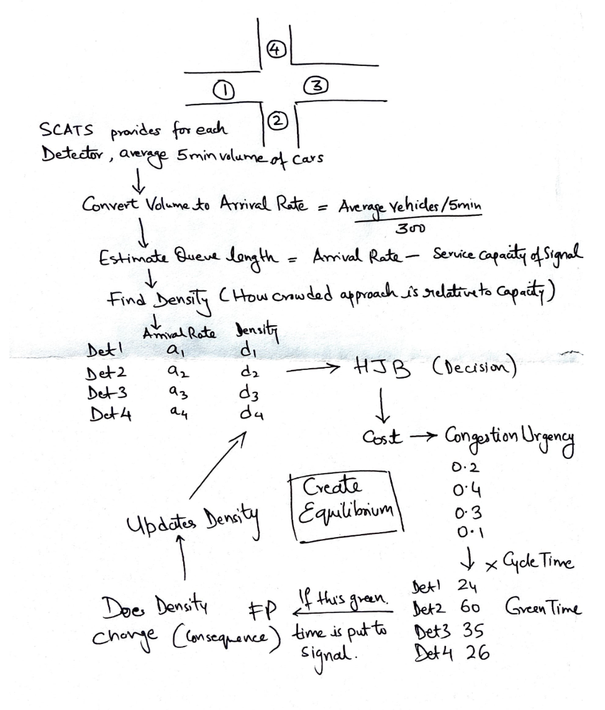
Method
This network-level perspective provides a more scalable approach for complex urban environments while remaining computationally practical. A key design objective throughout the research was real-world deployment. The controller was built to operate using existing traffic sensors, making it a low-cost, low-risk solution that could integrate into current traffic systems without additional hardware.
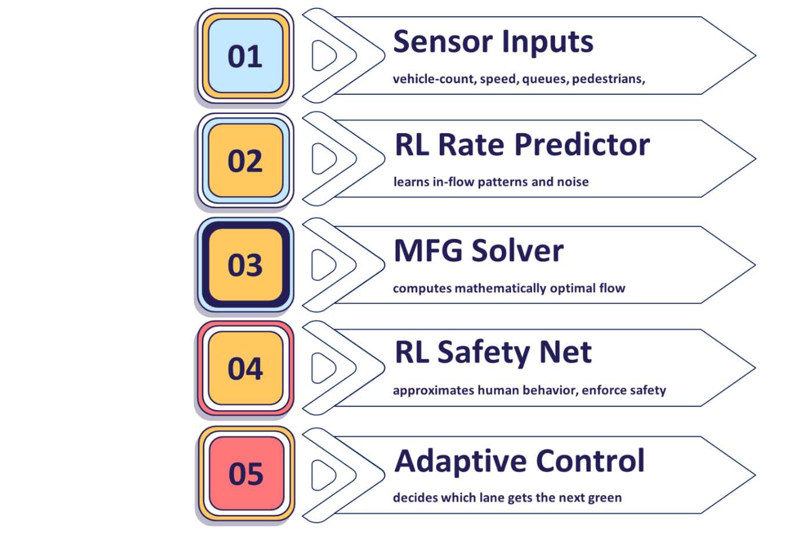
Results
The framework was evaluated on a digital recreation of the Saint Patrick's Cathedral junction in Dublin using publicly available traffic data. Compared against the existing signal strategy, it achieved statistically significant reductions in average waiting time, queue length, and spillback probability, with all findings validated through ANOVA and paired two-tailed hypothesis testing.
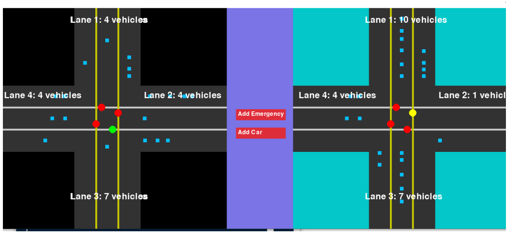
Recognition pathway
Beyond the technical research, the project was recognised by the University of Limerick, PATCH, Stripe YSTE, and Intelligent Transport Ireland, where it was later developed into a business concept during the Stripe YSTE Bootcamp. The research is currently being extended under the mentorship of Amirreza Kandiri at University College Dublin towards academic publication.
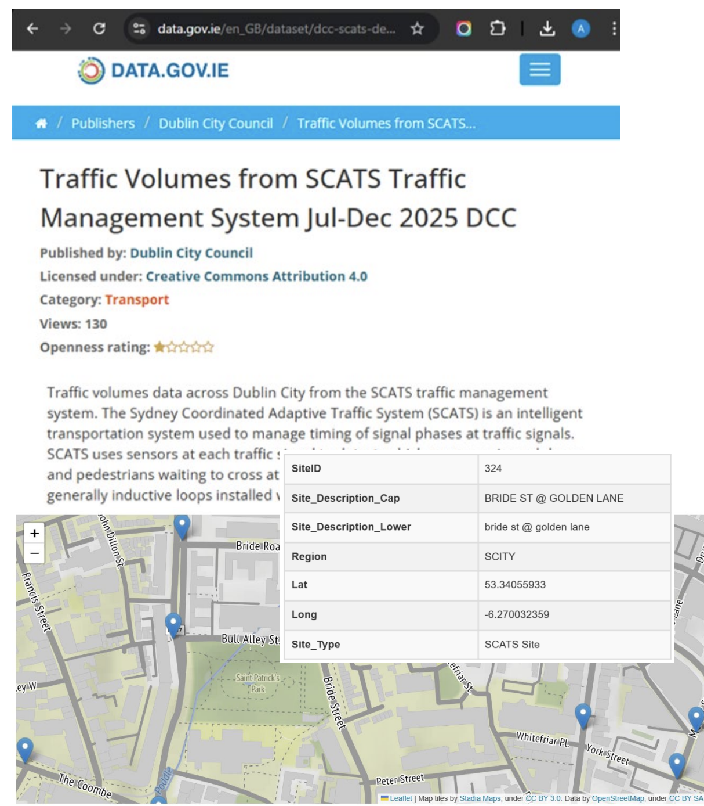
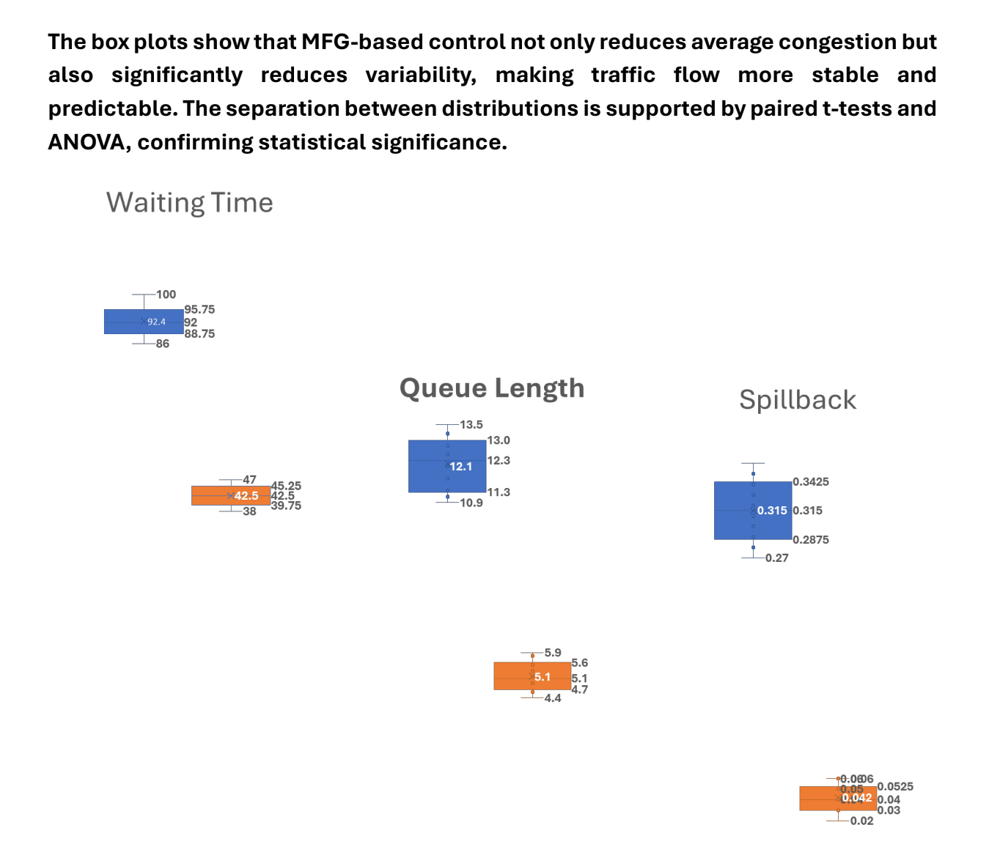
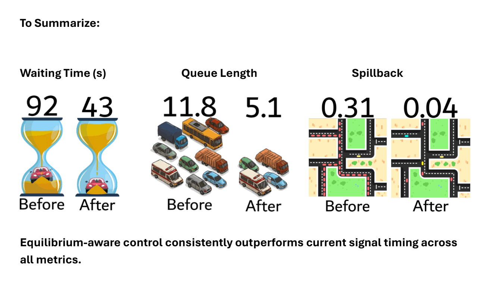
Recognition
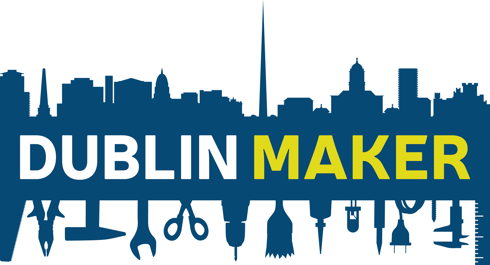
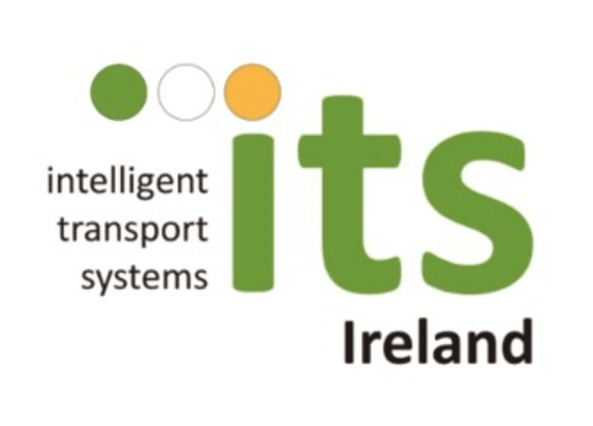
Gallery
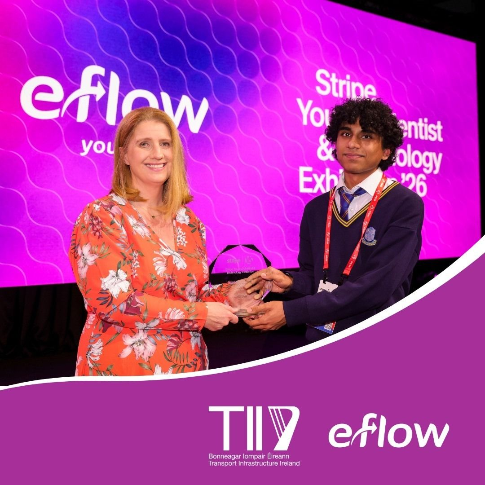
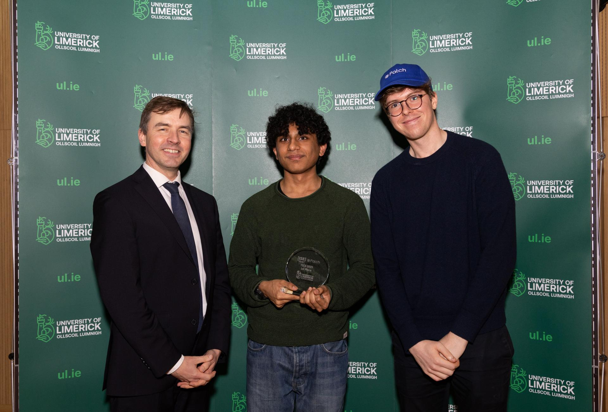
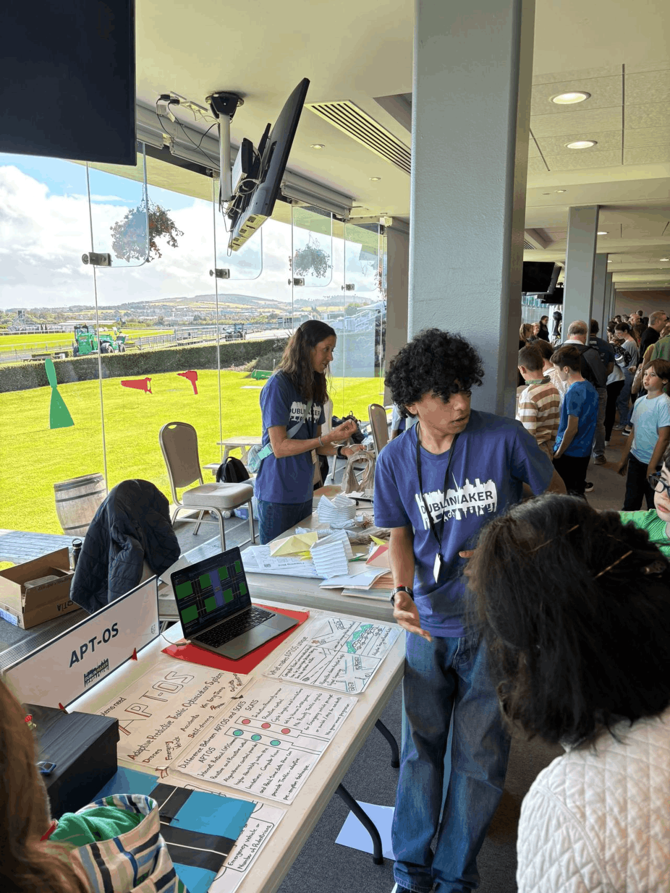

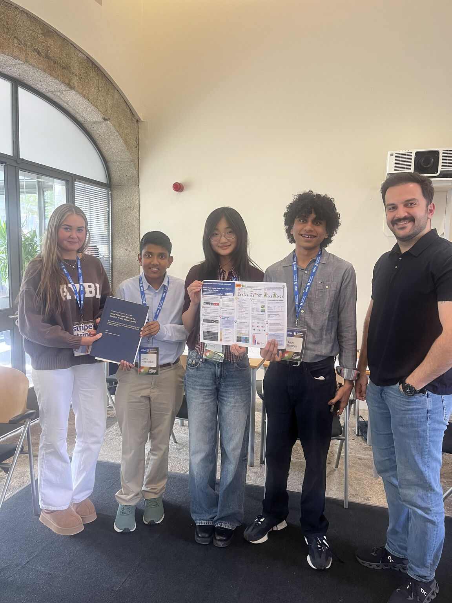